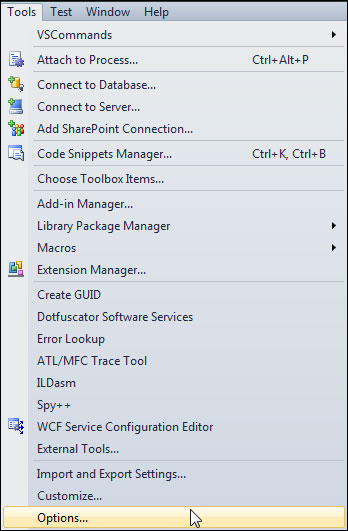
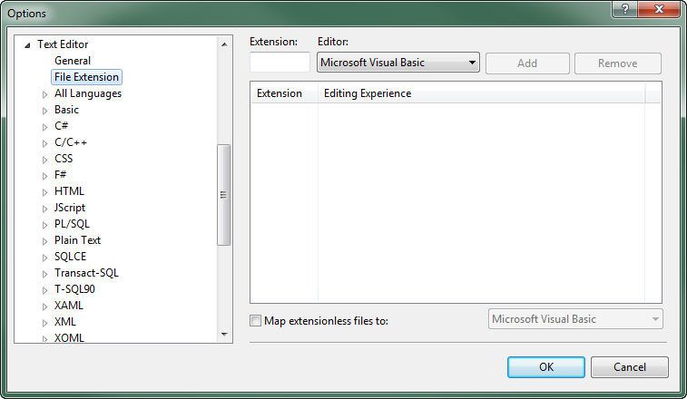
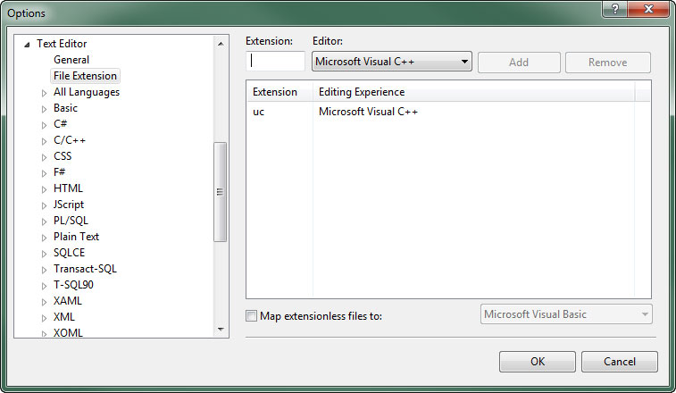
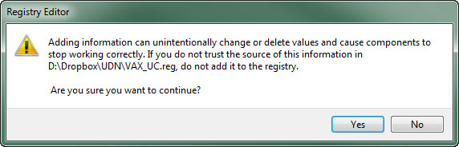
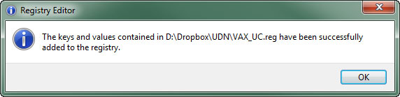

UDN
Search public documentation:
UsingVAXWithUnrealScript
日本語訳
中国翻译
한국어
Interested in the Unreal Engine?
Visit the Unreal Technology site.
Looking for jobs and company info?
Check out the Epic games site.
Questions about support via UDN?
Contact the UDN Staff
中国翻译
한국어
Interested in the Unreal Engine?
Visit the Unreal Technology site.
Looking for jobs and company info?
Check out the Epic games site.
Questions about support via UDN?
Contact the UDN Staff
UE3 Home > Getting Started: Unreal Engine 3 > Getting Started: Programming > Using Visual Assist X with UnrealScript
Using Visual Assist X With UnrealScript
Overview
Visual Assist X, provides refactoring, enhanced intellisense, and other workflow enhancements for programmers using Visual Studio. Visual Assist X can now be modified to enable unofficial and unsupported UnrealScript enhancements in Visual Studio.
Version and Installation
- Visual Assist X - Build 1862 Build Notes
- In the Tools menu, select Options to view the Visual Studio Options dialog.
 - Expand the Text Editor section and then select File Extension. Here you can add new handlers for file extensions.
 - Add uc in the Extension field and select Microsoft Visual C++ as the Editor. Then press the button to add the handler for the
ucextension.
 - Repeat the last step for the
ucifile extension as well. - Press the to save the changes.
Enabling UnrealScript Support
- Copy the text below and save it in a text file with the
.regfile extension:- Visual Studio 2010
Windows Registry Editor Version 5.00 [HKEY_CURRENT_USER\Software\Whole Tomato\Visual Assist X\VANet10] "EnableUC"=hex:01
- Visual Studio 2008
Windows Registry Editor Version 5.00 [HKEY_CURRENT_USER\Software\Whole Tomato\Visual Assist X\VANet9] "EnableUC"=hex:01
- Visual Studio 2010
- Run the new registry file by double-clicking it or through the right-click context menu by choosing Merge.
- UAC may ask if you want to run the file. Click the button if prompted.
- A warning is displayed informing you that you are about to modify the registry. Click the button to proceed.
 - If successful, the registry is updated and you will see the following message:

Setting Up UnrealScript Snippets
- Copy the
C:\Users\to\AppData\Roaming\VisualAssist\Autotext\cpp.tpl C:\Users\.\AppData\Roaming\VisualAssist\Autotext\uc.tpl - Once the
uc.tplfile has been created, UnrealScript will appear as a node in the VA Snippet editor. - Remove the UnrealScript snippets from the C++ node and the C++ snippets from the UnrealScript node.